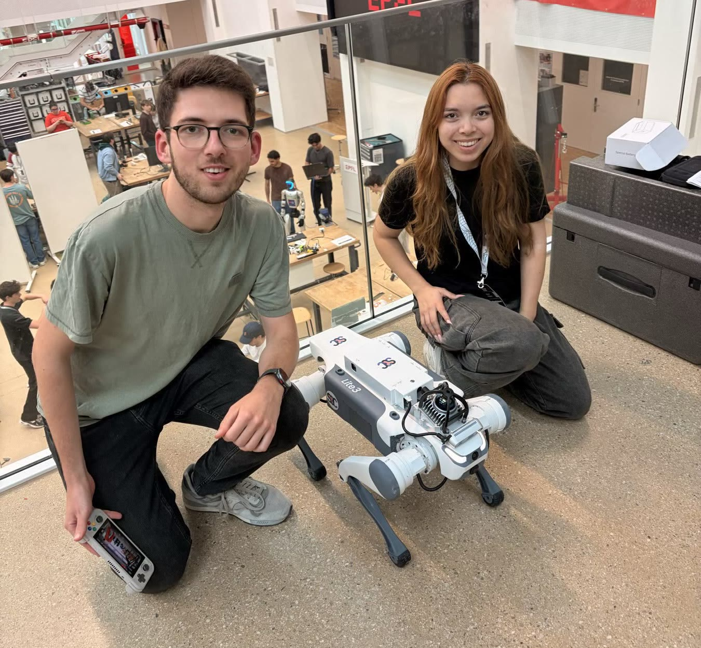

MAPA: A Quadruped Robot Guide Dog
A multimodal agent that listens, sees the world, and walks a person through it.
RoboHack EPFL 2026 · 3rd Place
MAPA is a robot guide dog for people who are blind or visually impaired. The idea is simple: a lot of the day-to-day struggle for someone without vision is not "getting somewhere" in the abstract, it's the specifics. Where is the door. Is the chair still there. How do I get to the coffee machine without asking a stranger. Guide dogs solve some of that, but they cost tens of thousands of euros to train, there are waiting lists that run for years, and they can't tell you what they are seeing. We wanted to build something that a person could just talk to, that would understand the space around it, and walk them through it.
You use it from your phone. You say what you want ("take me to the coffee machine", "is the path clear?", "is there a chair in front of me?") and the robot answers back out loud and starts walking. It looks at the world through its own cameras, understands what it is seeing, keeps track of where it is inside the building, and picks a path around whatever is in the way (people, chairs, doors, other robots, us). It narrates what it is doing as it goes, so the person walking with it is never in the dark about what is about to happen. All of that runs on real hardware, on a Unitree quadruped, live.
Under the hood, MAPA is one agent that ties everything together. It takes in the camera and LiDAR feeds to understand what is around it, runs a visual LLM to actually reason about what it is seeing, and uses SLAM to know where it is inside the space. Then a language model does the planning: given what the user asked for and what the robot is looking at, it decides the next thing to do and which tool to call for it. Locomotion, obstacle avoidance, and speech all sit on top of that plan.
We built the whole thing in one weekend at RoboHack EPFL and it took 3rd place.
